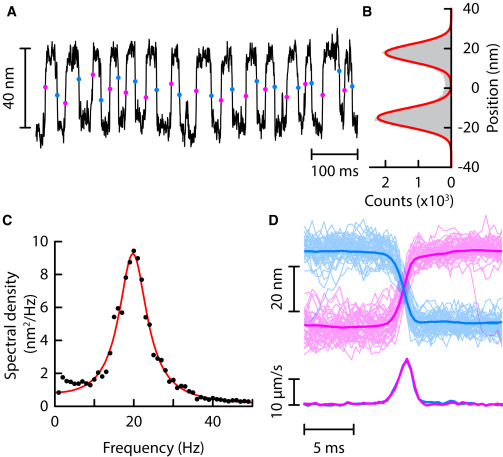
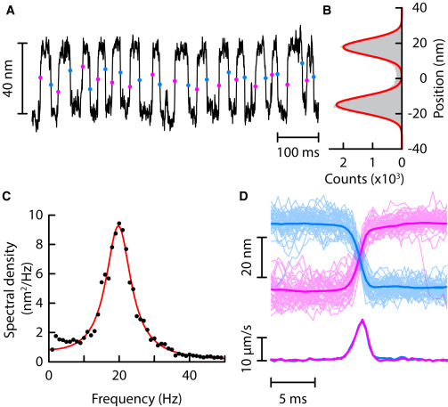

Filtering - same but different. [ROYALTY FREE]
Impact of entrainment on information processing in a generic model of some inner ear
Nonlinear dynamics is cool - but does it matter?
Bastian Epp, Pauline Schreich, Mikkel Berrig
$\pi \approx 3$
Can mechanisms unique to
non-linear dynamic behaviour
provide a "common base" for a broad variety of
hearing-related phenomena?
Current models of hearing:
$\pi \approx 3$
Potential refinement based on non-linear dynamics:
$\pi \approx 3.14$
(Some) Cornerstones of hearing models
The auditory system is...
Active

Selective


Sensitive

(Some) Cornerstones of non-linear dynamic systems
Nonlinear dynamic systems can be...
Active
 

Selective (and "adaptive")


Sensitive

Lenk et al. (2023); Barral (2018); Levy et al. (2016)
Are effects of entrainment consistent with
self-sustained activity,
selectivity, and
high sensitivity
as observed in the auditory system?
Methods
How does it move? - System of 80 oscillators
An (driven), active, nonlinear oscillator than can be put into self-sustained activity
van der Pol oscillator(s)
$\ddot{x_n}(t) = \omega_n \mu (1-x_n^2(t))\dot{x}_n(t) - \omega_n x_n(t) +$
$F_{d_n(t)} + F_{c_n}(t)$
With nearest-neighbour coupling
$F_{c_n}(t) = k_n \left(x_{n+1}(t)+x_{n-1}(t)-2x_{n}(t)\right) + d_n \left(\dot{x}_{n+1}(t)+\dot{x}_{n-1}(t)-2\dot{x}_{n}(t)\right) $
Vilfan-Duke (Ginzburg-Landau) oscillator(s)

$\dot z_n(t) = (\epsilon_n + j \omega_n) z_n(t) - B_n|z_n(t)|^2z_n(t) + F_{d_n(t)} + F_{c_n}(t)$
$z_n(t) = x_n(t) + \frac{j}{\omega}\dot x_n(t)$
With nearest-neighbour coupling
$F_{c_n}(t) = (d_n + jk_n)(z_{n+1}+z_{n-1}-2z_{n})$
Previously used for model of Lizard hearing organ. Same argument holds for e.g. van der Pol oscillator.
Methods
How do we quantify it?
How fast does it move?
Fraction of phase space period per time unit
$\nu = \frac{ \frac{d}{dt} [\angle x(t) + j\dot x(t)]}{2\pi}$
How much "information" is there?
Shannon information theory (with care)
Shannon entropy
$H(x_n) = - \displaystyle\sum_{x_n \in \mathcal{X}_n} p(x_n) \log_2 p(x_n)$
Mutual information
$ I(x_n(t),x_m(t)) = H(x_n(t)) + H(x_m(t)) - H(x_n(t),x_m(t))$
Summed information (driving, system)
$I_\Sigma = \displaystyle \sum_{m=1}^N I(F_d(t), x_m(t))$
Shannon information is not directional and only partially applicable to deterministic signals.
Results
Self-sustained activity
"in quiet"
Results
The effect of coupling - no driving force
Self-sustained activity

(A-C) van der Pol; (D-F) Ginzburg-Landau; No (A,D), dissipative (B,E), reactive (C,F) coupling.
Epp et al. (in prep)
Results
Self-sustained activity - interaction with driving force
"beeeeeeeeeeeep"
Results
The effect of coupling - with driving force
Self-sustained activity, selectivity
$F_{d_n}(t) = a \sin (2\pi f_d t)$
(A-C) van der Pol; (D-I) Ginzburg-Landau; No (A,D,G) a = 1; (B,E,H) a=3; (C,F,I) a=5;
Epp et al. (in prep)
Results
Self-sustained activity - interaction with driving force
How does that connect to data? SOAE!
Epp et al. (in prep); Rabinowitz (1984)

Results
Self-sustained activity - interaction with driving force - information
"(how) is the system sensitive?"
Results
Presence of information (Ginzburg-Landau)
Self-sustained activity, selectivity, sensitivity
(A-D) uncoupled; (E-L) coupled; (A,E,I) a=0; (B,F,J) a = 1; (C,G,K) a=3; (D,H,L) a=5;
Epp et al. (in prep)
The language of hearing is neural - so
what is the impact on neural signalling?
Methods
How to link mechanics and hair cells?
Cliffhanger
Hair cell: Verhulst et al. (2018)
Discussion and conclusion
What we found
Entrainment and clustering pheonmena affect the "collective response" of the system
Interaction with driving force affects the system as a whole
Behaviour is similar for high driving force amplitudes across oscillator types
(Some) cornerstones of hearing models
Systems of coupled nonlinear oscillators show collective pheonema compatible with hearing
Interaction with extrnal stimuli "plausible" with respect to data
Same basic behaviour for both investigated oscillator types
Cliffhanger - the neural domain
Oscillators coupled to hair cell model provide spike trains
Established metrics allow comparison to data
Access to all oscillators allows development of novel sensitive metrics
YEAH OH YEAH [royalty free]